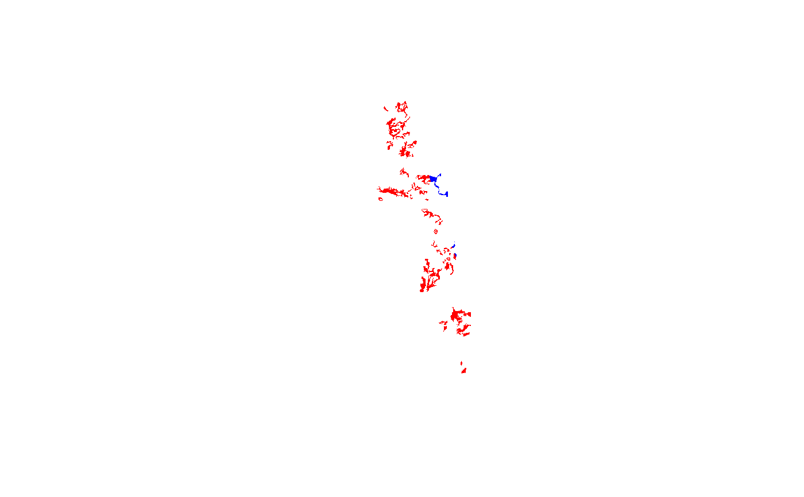

This is a high-level "fetch" method to facilitate spatial queries to Soil Data Access (SDA) based on mapunit key (mukey) and national mapunit symbol (nationalmusym) for mupolygon (SSURGO) or gsmmupolygon (STATSGO) geometry OR legend key (lkey) and area symbols (areasymbol) for sapolygon (Soil Survey Area; SSA) geometry).
A Soil Data Access spatial query is made returning geometry and key identifying information about the mapunit or area of interest. Additional columns from the mapunit or legend table can be included using add.fields argument.
This function automatically "chunks" the input vector (using soilDB::makeChunks) of mapunit identifiers to minimize the likelihood of exceeding the SDA data request size. The number of chunks varies with the chunk.size setting and the length of your input vector. If you are working with many mapunits and/or large extents, you may need to decrease this number in order to have more chunks.
Querying regions with complex mapping may require smaller chunk.size. Numerically adjacent IDs in the input vector may share common qualities (say, all from same soil survey area or region) which could cause specific chunks to perform "poorly" (slow or error) no matter what the chunk size is. Shuffling the order of the inputs using sample may help to eliminate problems related to this, depending on how you obtained your set of MUKEY/nationalmusym to query. One could feasibly use muacres as a heuristic to adjust for total acreage within chunks.
fetchSDA_spatial( x, by.col = "mukey", method = "feature", geom.src = "mupolygon", db = "SSURGO", add.fields = NULL, chunk.size = 10, verbose = TRUE )
| x | A vector of MUKEYs / national mapunit symbols (for mupolygon geometry); OR legend keys (LKEY) / area symbols (for sapolygon geometry) |
|---|---|
| by.col | Column name containing mapunit identifier |
| method | geometry result type: |
| geom.src | Either |
| db | Default: SSURGO. When |
| add.fields | Column names from |
| chunk.size | How many queries should spatial request be divided into? Necessary for large results. Default: 10 |
| verbose | Print messages? |
A Spatial*DataFrame corresponding to SDA spatial data for all symbols requested. Default result contains geometry with attribute table containing unique feature ID, symbol and area symbol plus additional fields in result specified with add.fields.
Note that STATSGO data are fetched using CLIPAREASYMBOL = 'US' to avoid duplicating state and national subsets of the geometry.
Andrew G. Brown
# \donttest{ if(requireNamespace("curl") & curl::has_internet()) { # get spatial data for a single mukey single.mukey <- fetchSDA_spatial(x = "2924882") # demonstrate fetching full extent (multi-mukey) of national musym full.extent.nmusym <- fetchSDA_spatial(x = "2x8l5", by = "nmusym") # compare extent of nmusym to single mukey within it if(require(sp)) { plot(full.extent.nmusym, col = "RED",border=0) plot(single.mukey, add = TRUE, col = "BLUE", border=0) } # demo adding a field (`muname`) to attribute table of result head(fetchSDA_spatial(x = "2x8l5", by="nmusym", add.fields="muname")) }#>#>#>#>#>#>#>#>#>#>#> class : SpatialPolygonsDataFrame #> features : 6 #> extent : -121.034, -120.9596, 38.01706, 38.24938 (xmin, xmax, ymin, ymax) #> crs : +proj=longlat +datum=WGS84 +no_defs #> variables : 5 #> names : gid, mukey, areasymbol, nationalmusym, muname #> min values : 1, 462101, CA077, 2x8l5, Pentz-Bellota complex, 2 to 15 percent slopes #> max values : 6, 462101, CA077, 2x8l5, Pentz-Bellota complex, 2 to 15 percent slopes# }